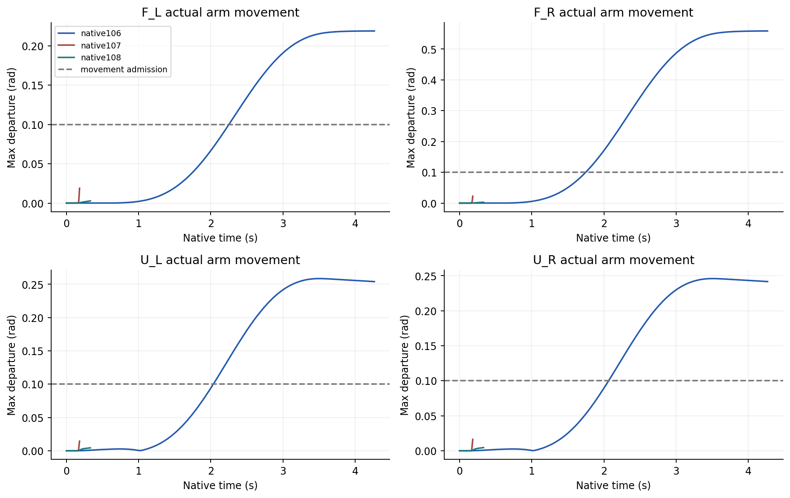
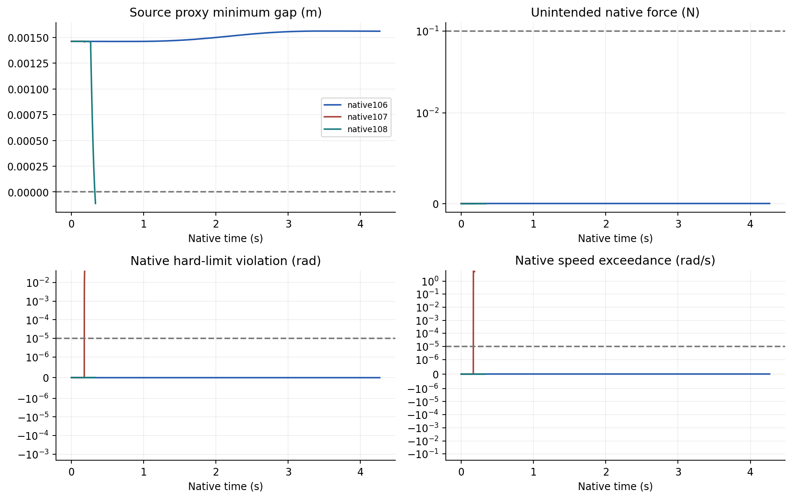
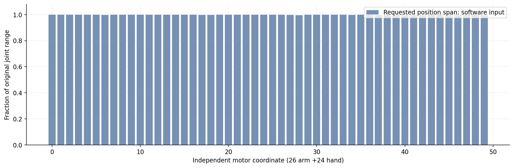

01研究问题与当前结论
最新夹持报告中全部26个机械臂关节的指令跨度为零，只验证闭合与 HOLD。它不能说明遥操运动或大范围随机动作安全。
本页增加真实四臂退离及一条随机指令的原生配对对照，分别显示实际移动、危险指标和干预代价。当前仍不能宣称所有遥操动作安全。
02运动输入与执行链路
退离轨迹 / 未筛选随机目标
随机对照只有26维机械臂输入
60 Hz 输入 →960 Hz 物理
全部74关节、82点接触视图
原始质量、惯量、关节约束与全部50个独立电机的力矩控制保持不变；四手保持捕获时的目标。确定性防护只限制指令速率、关节范围并检查源模型间隙，实际学习版 System 0 尚未接入本次测试。
本轮为实验资产2FR3/F2＋2UR5/DFX，目标2FR3＋2JAKA＋4RH56F2硬件配置尚未完成资格验证。四臂退离动作不等于四手共同抓取、搬运和释放任务完成。
03预注册与原始门槛
执行前固定轨迹、随机输入、方法、失败中止和验收项。原始24条 URDF 关系的 q 与 q̇ 残差均须≤10⁻⁴，全部74关节硬限位和速度超限≤10⁻⁵；全部9021个代理间隙须≥0，非预期原生接触≤0.1 N，单手物体法向力≤30 N。
另加实际动作门槛：每臂最大关节变化≥0.1 rad、手端路径≥2 cm，防止全部 HOLD 获得运动验收。代理几何通过不等于原生碰撞形状证书。
04实验分母与失败保留
| 证据层 | 样本 / 执行 | 可支持的结论 |
|---|---|---|
| 全50维时序输入银行 | 128条输入、2048指令块；完整物理银行执行0 | 输入覆盖与原始关节关系检查 |
| 四臂退离基线 | 1条开发轨迹 | 这条退离动作的原生结果 |
| 随机配对 | 1条随机序列 ×2方法，独立初态1 | 这个输入上的干预与失败比较 |
| 真人遥操 / 学习版System0 / 正式留出 | 均0 | 尚无验收证据 |
8192个物理微步不能当作8192次独立实验；截停与失败全部保留。这一随机开发样本不支持成功率置信区间或整体安全概率。
05实际动作与物理结果
| 方法 | 实际时长 / 完成 | 原始物理 | 原始q / q̇关系 | 四臂动作 | 完整运动诊断 |
|---|---|---|---|---|---|
| 四臂退离动作 | 4.267s / 256/256 | 通过 | 通过 | 通过 | 通过 |
| 随机原始指令 | 0.183s / 11/256 | 失败 | 通过 | 不足 | 失败 |
| 随机确定性防护 | 0.333s / 20/256 | 失败 | 通过 | 不足 | 失败 |


06随机指令干预效果
两方法共用原始目标序列和物理初态。不干预时，U_L/left_little_2_joint实际速度达12.374 rad/s，超过原始6.28 rad/s上限。确定性防护避免了该超速，但在0.325秒触发代理间隙门槛，仍未通过。
失败时，提交目标的源模型间隙仍为正，而把同一个预测器输入换成实际关节状态即可重现负间隙，和运行态关键间隙差不到0.21微米。这说明指令状态的筛查没有保证实际状态安全；需补实际状态、速度、延迟队列与跟踪及制动余量，不能只提高软件筛查样本数。
预计算的256个控制时刻中有200个生成零新增位移指令，其中多数未实际执行；完整计划不是执行证据。停止危险意图可以是正确干预，但仍需独立展示可行空间中的有效动作。负代理间隙本身不等于原生碰撞或硬件碰撞证据。
07原生多视角视频
四臂退离动作 · native106 · 4.267秒
随机原始指令 · native107 · 0.183秒
原始门槛触发后已中止；视频只展示实际执行前缀，未补出计划动作。
随机确定性防护 · native108 · 0.333秒
原始门槛触发后已中止；视频只展示实际执行前缀，未补出计划动作。
08随机范围：输入与实际执行

当前原生随机对照只执行26个机械臂维度的一条序列，24个手部独立电机未随机动作。四手协同搬运、广泛可操作空间和全50维实际覆盖均待补齐。实际每关节跨度、手端路径和空间跨度逐项保存在结果JSON。
09尚未满足的验收要求
旧的128条筛选后运动开发样本中，安全回退仍有10条物理主门槛失败，且不能代表全50维随机空间。本轮不覆盖真人操作记录、四手共同搬运完成、学习版System0、物体与感知不确定性、制动距离和正式留出验收。
全部九项联合验收仍未通过。全面安全结论必须同时具备实际动作、全程安全、任务完成和冻结协议后的独立测试，不能只统计没有碰撞的静止窗口。
10完整数据与复现来源
- MOTION_RESULTS_V1.json
- PER_STEP_MOTION_METRICS_V1.csv
- MEDIA_TIMESTAMPS_AND_CUSTODY_V1.json
- RAW_ARCHIVE_MANIFEST_V1.json
- METHOD_SOURCE_MANIFEST_V2.json
- evidence/owned_method_source_v2.zip
- evidence/REPORT_COVERAGE_GAP_AUDIT_V1.json
- evidence/OPERATIONAL_MOTION_PROSPECTIVE_PLAN_V1.json
- evidence/TEMPORAL_RANDOM_PROSPECTIVE_PLAN_V1.json
- evidence/TEMPORAL_RANDOM_INPUT_AUDIT_V1.json
- evidence/TEMPORAL_RANDOM_MOTION_BANK_V1.npz
- evidence/RANDOM_ARM_PAIR107_108_PROSPECTIVE_PLAN_V1.json
- evidence/RANDOM_MOTION_PAIR_CAUSAL_FRONTIER_V2.json
全部原生捕获分卷（无删样本）
方法源码与原始URDF已提供；外部模拟器SDK、完整资源和驱动库需要原有环境。活动原生碰撞形状身份及SDK二进制来源尚未认证，不声称仅凭源码包即可复现所有原生内部行为。